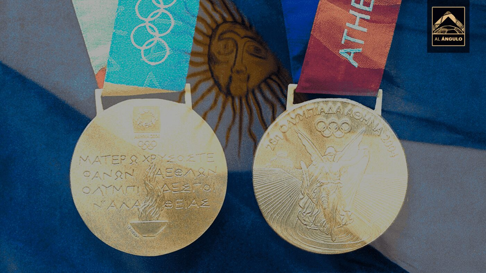

Logros de la Generación Dorada
Esta página junta todo lo que ganó la Generación Dorada: las medallas de la Selección, los premios individuales de sus figuras, los títulos que consiguieron en sus clubes y los récords que dejaron. Cómo se jugó cada torneo está contado en Historia, y la trayectoria de cada jugador está en Jugadores.
De todos los logros, el más importante es el oro olímpico de Atenas 2004. Un título olímpico vale más que un Mundial porque Estados Unidos suele mandar a sus mejores jugadores a los Juegos, y no siempre a los Mundiales. La explicación completa está en Historia.

Medallas y resultados de la Selección
Los resultados de la Selección argentina en los torneos grandes, con los jugadores de la Generación Dorada. Las filas marcadas con una franja dorada son los Mundiales y los Juegos Olímpicos.
| Año | Torneo | Resultado |
|---|---|---|
| 1995 | Juegos Panamericanos, Mar del PlataCon Oberto y Wolkowyski en el plantel. | Oro |
| 2001 | Campeonato FIBA Américas, NeuquénPrimer título de Argentina en esa competencia. Ginóbili, mejor jugador del torneo. | Oro |
| 2002 | Mundial, IndianápolisVenció a Estados Unidos; perdió la final con Yugoslavia 84 a 77 en tiempo suplementario. | Plata |
| 2003 | Campeonato FIBA Américas | Plata |
| 2004 | Juegos Olímpicos, AtenasVenció a Estados Unidos 89 a 81 en la semifinal y a Italia 84 a 69 en la final. | Oro |
| 2005 | Campeonato FIBA Américas | Plata |
| 2006 | Mundial, JapónPerdió con Estados Unidos 96 a 81 en el partido por el bronce. | Cuarto puesto |
| 2007 | Campeonato FIBA Américas | Plata |
| 2008 | Juegos Olímpicos, BeijingVenció a Lituania 87 a 75 en el partido por el bronce. | Bronce |
| 2008 | Torneo Diamond Ball | Oro |
| 2009 | Campeonato FIBA Américas | Bronce |
| 2010 | Mundial, TurquíaScola metió 37 puntos contra Brasil, la mayor cantidad de un argentino en un partido de Mundial. | Quinto puesto |
| 2011 | Campeonato FIBA Américas, Mar del Plata | Oro |
| 2012 | Juegos Olímpicos, LondresPerdió con Rusia 81 a 77 en el partido por el bronce. | Cuarto puesto |
| 2013 | Campeonato FIBA Américas | Bronce |
| 2015 | Campeonato FIBA Américas | Plata |
| 2017 | AmeriCup | Plata |
| 2019 | Mundial, ChinaPerdió la final con España 95 a 75. | Plata |
| 2019 | Juegos Panamericanos, Lima | Oro |
Además, varios integrantes de la generación ganaron el Campeonato Sudamericano en 2001, 2004 y 2012.
Premios individuales
Algunos de los reconocimientos personales más importantes de los integrantes de la Generación Dorada.
- Manu Ginóbili: mejor jugador de la final de la Euroliga 2001, mejor jugador del torneo olímpico de Atenas 2004, mejor sexto hombre de la NBA en 2008, All-Star de la NBA en 2005 y 2011, y elegido en el tercer mejor quinteto de la NBA en 2008 y 2011.
- Luis Scola: mejor jugador del Campeonato FIBA Américas cuatro veces (2007, 2009, 2011 y 2015), mejor jugador de la liga española en 2005 y 2007, y elegido en el primer quinteto de la Euroliga en 2006 y 2007.
- Andrés Nocioni: mejor jugador de la Final Four de la Euroliga 2015 y mejor jugador de la liga española en 2004.
- Fabricio Oberto: mejor jugador y mejor jugador de las finales de la liga argentina en 1998.
- Pepe Sánchez: mejor jugador de la Atlantic 10 en el año 2000 con la Universidad de Temple y elegido en el tercer equipo All-American del básquet universitario.
- Walter Herrmann: mejor jugador de la liga española en 2003 y elegido en el segundo quinteto de novatos de la NBA en 2007.
- Leonardo Gutiérrez: cuatro veces mejor jugador de la liga argentina (2005, 2006, 2008 y 2010).
- Rubén Wolkowyski: mejor jugador de la liga argentina en 2000.
- Alejandro Montecchia: mejor jugador de la Liga Sudamericana en 2008.
Títulos en los clubes
- Campeones de la NBA: Manu Ginóbili ganó cuatro anillos con San Antonio Spurs (2003, 2005, 2007 y 2014) y Fabricio Oberto ganó uno con los Spurs, en 2007.
- Campeones de la Euroliga: Hugo Sconochini (1998 y 2001, con Bologna), Manu Ginóbili (2001, con Bologna), Pepe Sánchez (2002, con Panathinaikos) y Andrés Nocioni (2015, con Real Madrid).
- Campeones de la liga española (ACB): Nocioni, Scola, Oberto, Sconochini y Gabriel Fernández ganaron la liga española de 2002 con Tau Cerámica, el equipo de Vitoria que hoy se llama Baskonia.
- Liga Nacional de Argentina: Leonardo Gutiérrez ganó diez títulos entre 1996 y 2014.
Récords y honores
- Luis Scola es el máximo anotador argentino en la historia de los Mundiales después de pasar, en 2010, los 331 puntos de Ernesto Gehrmann. En 2019 llegó a 611 puntos en Mundiales, y en la lista histórica de goleadores de esos torneos solo lo supera Oscar Schmidt (906).
- Scola metió 37 puntos contra Brasil en el Mundial 2010, el récord argentino en un partido de Mundial. El récord anterior eran 35 puntos de Alberto Desimone contra México en 1963.
- Scola es el máximo anotador de la historia de la AmeriCup, un récord que alcanzó en 2015.
- Manu Ginóbili fue incluido en el Salón de la Fama del Básquet (Naismith) en su primer año de elegibilidad: fue anunciado en abril de 2022 y ceremoniado el 10 de septiembre de 2022.
- Fabricio Oberto ingresó al Salón de la Fama de la FIBA en 2019 y Rubén Magnano en 2021.
- Pepe Sánchez fue el primer argentino que jugó en la NBA.
Fuentes
- Wikipedia: selección argentina de básquet
- Wikipedia: Manu Ginóbili
- Wikipedia: Luis Scola
- Wikipedia: Andrés Nocioni
- Wikipedia: Fabricio Oberto
- Wikipedia: Pepe Sánchez
- Wikipedia: Walter Herrmann
- Wikipedia: Leonardo Gutiérrez
- Wikipedia: Rubén Wolkowyski
- Wikipedia: Alejandro Montecchia
- La Nación: Rubén Magnano anunció que dejará de dirigir